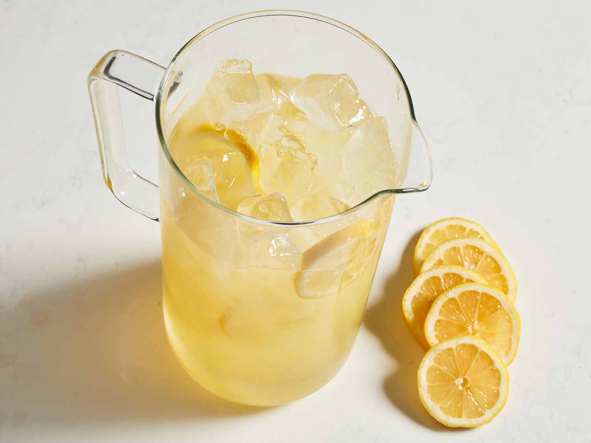

Lemonade

Description
When life gives you lemons, make the Best Lemonade Ever!
Ingredients
- Sugar and water
- Lemon Juice
- Ice
Steps
- Juice your lemons. Start by firmly rolling the lemons around on the counter. This will help release the juices and make your job a lot easier. Cut the lemon in half lengthwise, then squeeze out the juice by hand or with a juicer.
Make sure to juice the lemons over a large measuring cup so you can see exactly how much liquid you have.
- Make a simple syrup. It is shockingly simple to make simple syrup on the stove. Just combine sugar and water in a small saucepan, bring the mixture to a boil, and stir it until the sugar is dissolved.
- Stir. Pour cold water into a pitcher. Stir in lemon juice and pulp, then add simple syrup to taste.
Enjoy!